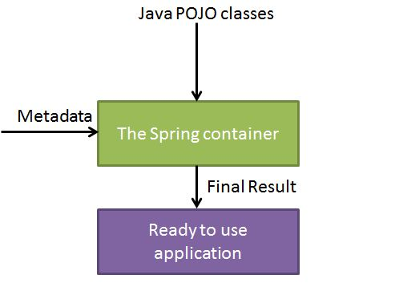

Spring Quick Guide
Spring is the most popular application development framework for enterprise Java. Millions of developers around the world use Spring Framework to create high performing, easily testable, reusable code.
Spring framework is an open source Java platform and it was initially written by Rod Johnson and was first released under the Apache 2.0 license in June 2003.
Spring is lightweight when it comes to size and transparency. The basic version of spring framework is around 2MB.
The core features of the Spring Framework can be used in developing any Java application, but there are extensions for building web applications on top of the Java EE platform. Spring framework targets to make J2EE development easier to use and promote good programming practice by enabling a POJO-based programming model.
Benefits of Using Spring Framework:
Following is the list of few of the great benefits of using Spring Framework:
Spring enables developers to develop enterprise-class applications using POJOs. The benefit of using only POJOs is that you do not need an EJB container product such as an application server but you have the option of using only a robust servlet container such as Tomcat or some commercial product.
Spring is organized in a modular fashion. Even though the number of packages and classes are substantial, you have to worry only about ones you need and ignore the rest.
Spring does not reinvent the wheel instead, it truly makes use of some of the existing technologies like several ORM frameworks, logging frameworks, JEE, Quartz and JDK timers, other view technologies.
Testing an application written with Spring is simple because environment-dependent code is moved into this framework. Furthermore, by using JavaBean-style POJOs, it becomes easier to use dependency injection for injecting test data.
Spring's web framework is a well-designed web MVC framework, which provides a great alternative to web frameworks such as Struts or other over engineered or less popular web frameworks.
Spring provides a convenient API to translate technology-specific exceptions (thrown by JDBC, Hibernate, or JDO, for example) into consistent, unchecked exceptions.
Lightweight IoC containers tend to be lightweight, especially when compared to EJB containers, for example. This is beneficial for developing and deploying applications on computers with limited memory and CPU resources.
Spring provides a consistent transaction management interface that can scale down to a local transaction (using a single database, for example) and scale up to global transactions (using JTA, for example).
Spring Framework Architecture
Spring could potentially be a one-stop shop for all your enterprise applications, however, Spring is modular, allowing you to pick and choose which modules are applicable to you, without having to bring in the rest. Following section gives detail about all the modules available in Spring Framework.
The Spring Framework provides about 20 modules which can be used based on an application requirement.

Spring Environment Setup
I assume you already have setup for Java Development Kit (JDK) and Eclipse IDE. So now let us see how to setup Spring Framework libraries:
Following are the simple steps to download and install the framework on your machine.
Make a choice whether you want to install Spring on Windows, or Unix and then proceed to the next step to download .zip file for windows and .tz file for Unix.
Download the latest version of Spring framework binaries from http://www.springsource.org/download.
At the time of writing this tutorial, I downloaded spring-framework-3.1.0.M2.zip and when you unzip the downloaded file it will give you directory structure inside C:\spring-framework-3.1.0.M2 as follows.
You will find all the Spring libraries in the directory C:\spring-framework-3.1.0.M2\dist. Make sure you set your CLASSPATH variable on this directory properly otherwise you will face problem while running your application.
Once you are done with this last step, you are ready to proceed for your first Spring Example.
Spring Hello World Example
Let us start actual programming with Spring Framework. Before you start writing your first example using Spring framework, you have make sure that you have setup your Spring environment properly as explained in Spring - Environment Setup tutorial. I also assume that you have a little bit working knowledge with Eclipse IDE.
So let us proceed to write a simple Spring Application which will print "Hello World!" or any other message based on the configuration done in Spring Beans Configuration file.
Step 1 - Create Java Project:
The first step is to create a simple Java Project using Eclipse IDE. Follow the option File -> New -> Project and finally select Java Project wizard from the wizard list. Now name your project as HelloSpring using the wizard window as follows:
Once your project is created successfully, you will have following content in your Project Explorer:
Step 2 - Add Required Libraries:
As a second step let us add Spring Framework and common logging API libraries in our project. To do this, right click on your project name HelloSpring and then follow the following option available in context menu: Build Path -> Configure Build Path to display the Java Build Path window as follows:
Now use Add External JARs button available under Libraries tab to add the following core JARs from Spring Framework and Common Logging installation directories:
antlr-runtime-3.0.1
org.springframework.aop-3.1.0.M2
org.springframework.asm-3.1.0.M2
org.springframework.aspects-3.1.0.M2
org.springframework.beans-3.1.0.M2
org.springframework.context.support-3.1.0.M2
org.springframework.context-3.1.0.M2
org.springframework.core-3.1.0.M2
org.springframework.expression-3.1.0.M2
commons-logging-1.1.1
Step 3 - Create Source Files:
Now let us create actual source files under the HelloSpring project. First we need to create a package called com.tutorialspoint. To do this, right click on src in package explorer section and follow the option : New -> Package.
Next we will create HelloWorld.java and MainApp.java files under the com.tutorialspoint package.
Here is the content of HelloWorld.java file:
package com.tutorialspoint;
public class HelloWorld {
private String message;
public void setMessage(String message){
this.message = message;
}
public void getMessage(){
System.out.println("Your Message : " + message);
}
}
Following is the content of the second file MainApp.java:
package com.tutorialspoint;
import org.springframework.context.ApplicationContext;
import org.springframework.context.support.ClassPathXmlApplicationContext;
public class MainApp {
public static void main(String[] args) {
ApplicationContext context =
new ClassPathXmlApplicationContext("Beans.xml");
HelloWorld obj = (HelloWorld) context.getBean("helloWorld");
obj.getMessage();
}
}
There are following two important points to note about the main program:
First step is to create application context where we used framework API ClassPathXmlApplicationContext(). This API loads beans configuration file and eventually based on the provided API, it takes care of creating and initializing all the objects ie. beans mentioned in the configuration file.
Second step is used to get required bean using getBean() method of the created context. This method uses bean ID to return a generic object which finally can be casted to actual object. Once you have object, you can use this object to call any class method.
Step 4 - Create Bean Configuration File:
You need to create a Bean Configuration file which is an XML file and acts as cement that glues the beans ie. classes together. This file needs to be created under the src directory as shown below:
Usually developers keep this file name as Beans.xml, but you are independent to choose any name you like. You have to make sure that this file is available in CLASSPATH and use the same name in main application while creating application context as shown in MainApp.java file.
The Beans.xml is used to assign unique IDs to different beans and to control the creation of objects with different values without impacting any of the Spring source files. For example, using below file you can pass any value for "message" variable and so you can print different values of message without impacting HelloWorld.java and MainApp.java files. Let us see how it works:
<?xml version="1.0" encoding="UTF-8"?>
<beans xmlns="http://www.springframework.org/schema/beans"
xmlns:xsi="http://www.w3.org/2001/XMLSchema-instance"
xsi:schemaLocation="http://www.springframework.org/schema/beans
http://www.springframework.org/schema/beans/spring-beans-3.0.xsd">
<bean id="helloWorld" class="com.tutorialspoint.HelloWorld">
<property name="message" value="Hello World!"/>
</bean>
</beans>
When Spring application gets loaded into the memory, Framework makes use of the above configuration file to create all the beans defined and assign them a unique ID as defined in <bean> tag. You can use <property> tag to pass the values of different variables used at the time of object creation.
Step 5 - Running the Program:
Once you are done with creating source and beans configuration files, you are ready for this step which is compiling and running your program. To do this, Keep MainApp.Java file tab active and use either Run option available in the Eclipse IDE or use Ctrl + F11 to compile and run your MainApp application. If everything is fine with your application, this will print the following message in Eclipse IDE's console:
Your Message : Hello World!
Spring IoC Containers
The Spring container is at the core of the Spring Framework. The container will create the objects, wire them together, configure them, and manage their complete lifecycle from creation till destruction. The Spring container uses dependency injection (DI) to manage the components that make up an application. These objects are called Spring Beans which we will discuss in next chapter.
The container gets its instructions on what objects to instantiate, configure, and assemble by reading configuration metadata provided. The configuration metadata can be represented either by XML, Java annotations, or Java code. The following diagram is a high-level view of how Spring works. The Spring IoC container makes use of Java POJO classes and configuration metadata to produce a fully configured and executable system or application.
Spring provides following two distinct types of containers.
| S.N. | Container & Description |
|---|---|
| 1 | Spring BeanFactory Container This is the simplest container providing basic support for DI and defined by the org.springframework.beans.factory.BeanFactory interface. The BeanFactory and related interfaces, such as BeanFactoryAware, InitializingBean, DisposableBean, are still present in Spring for the purposes of backward compatibility with the large number of third-party frameworks that integrate with Spring. |
| 2 | Spring ApplicationContext Container This container adds more enterprise-specific functionality such as the ability to resolve textual messages from a properties file and the ability to publish application events to interested event listeners. This container is defined by the org.springframework.context.ApplicationContext interface. |
The ApplicationContext container includes all functionality of the BeanFactory container, so it is generally recommended over the BeanFactory. BeanFactory can still be used for light weight applications like mobile devices or applet based applications where data volume and speed is significant.
Spring Bean Definition
The objects that form the backbone of your application and that are managed by the Spring IoC container are called beans. A bean is an object that is instantiated, assembled, and otherwise managed by a Spring IoC container. These beans are created with the configuration metadata that you supply to the container, for example, in the form of XML <bean/> definitions which you have already seen in previous chapters.
The bean definition contains the information called configuration metadata which is needed for the container to know the followings:
How to create a bean
Bean's lifecycle details
Bean's dependencies
All the above configuration metadata translates into a set of the following properties that make up each bean definition.
| Properties | Description |
|---|---|
| class | This attribute is mandatory and specify the bean class to be used to create the bean. |
| name | This attribute specifies the bean identifier uniquely. In XML-based configuration metadata, you use the id and/or name attributes to specify the bean identifier(s). |
| scope | This attribute specifies the scope of the objects created from a particular bean definition and it will be discussed in bean scopes chapter. |
| constructor-arg | This is used to inject the dependencies and will be discussed in next chapters. |
| properties | This is used to inject the dependencies and will be discussed in next chapters. |
| autowiring mode | This is used to inject the dependencies and will be discussed in next chapters. |
| lazy-initialization mode | A lazy-initialized bean tells the IoC container to create a bean instance when it is first requested, rather than at startup. |
| initialization method | A callback to be called just after all necessary properties on the bean have been set by the container. It will be discussed in bean life cycle chapter. |
| destruction method | A callback to be used when the container containing the bean is destroyed. It will be discussed in bean life cycle chapter. |
Spring Configuration Metadata
Spring IoC container is totally decoupled from the format in which this configuration metadata is actually written. There are following three important methods to provide configuration metadata to the Spring Container:
XML based configuration file.
Annotation-based configuration
Java-based configuration
You already have seen how XML based configuration metadata provided to the container, but let us see another sample of XML based configuration file with different bean definitions including lazy initialization, initialization method and destruction method:
<?xml version="1.0" encoding="UTF-8"?>
<beans xmlns="http://www.springframework.org/schema/beans"
xmlns:xsi="http://www.w3.org/2001/XMLSchema-instance"
xsi:schemaLocation="http://www.springframework.org/schema/beans
http://www.springframework.org/schema/beans/spring-beans-3.0.xsd">
<!-- A simple bean definition -->
<bean id="..." class="...">
<!-- collaborators and configuration for this bean go here -->
</bean>
<!-- A bean definition with lazy init set on -->
<bean id="..." class="..." lazy-init="true">
<!-- collaborators and configuration for this bean go here -->
</bean>
<!-- A bean definition with initialization method -->
<bean id="..." class="..." init-method="...">
<!-- collaborators and configuration for this bean go here -->
</bean>
<!-- A bean definition with destruction method -->
<bean id="..." class="..." destroy-method="...">
<!-- collaborators and configuration for this bean go here -->
</bean>
<!-- more bean definitions go here -->
</beans>
Spring Bean Scopes
When defining a <bean> in Spring, you have the option of declaring a scope for that bean. For example, To force Spring to produce a new bean instance each time one is needed, you should declare the bean's scope attribute to be prototype. Similar way if you want Spring to return the same bean instance each time one is needed, you should declare the bean's scope attribute to be singleton.
The Spring Framework supports following five scopes, three of which are available only if you use a web-aware ApplicationContext.
| Scope | Description |
|---|---|
| singleton | This scopes the bean definition to a single instance per Spring IoC container (default). |
| prototype | This scopes a single bean definition to have any number of object instances. |
| request | This scopes a bean definition to an HTTP request. Only valid in the context of a web-aware Spring ApplicationContext. |
| session | This scopes a bean definition to an HTTP session. Only valid in the context of a web-aware Spring ApplicationContext. |
| global-session | This scopes a bean definition to a global HTTP session. Only valid in the context of a web-aware Spring ApplicationContext. |
Spring Bean Life Cycle
The life cycle of a Spring bean is easy to understand. When a bean is instantiated, it may be required to perform some initialization to get it into a usable state. Similarly, when the bean is no longer required and is removed from the container, some cleanup may be required.
Though, there is lists of the activities that take place behind the scenes between the time of bean Instantiation and its destruction, but this chapter will discuss only two important bean lifecycle callback methods which are required at the time of bean initialization and its destruction.
To define setup and teardown for a bean, we simply declare the <bean> with init-method and/or destroy-method parameters. The init-method attribute specifies a method that is to be called on the bean immediately upon instantiation. Similarly, destroy-method specifies a method that is called just before a bean is removed from the container.
Initialization callbacks:
The org.springframework.beans.factory.InitializingBean interface specifies a single method:
void afterPropertiesSet() throws Exception;
So you can simply implement above interface and initialization work can be done inside afterPropertiesSet() method as follows:
public class ExampleBean implements InitializingBean {
public void afterPropertiesSet() {
// do some initialization work
}
}
In the case of XML-based configuration metadata, you can use the init-method attribute to specify the name of the method that has a void no-argument signature. For example:
<bean id="exampleBean"
class="examples.ExampleBean" init-method="init"/>
Following is the class definition:
public class ExampleBean {
public void init() {
// do some initialization work
}
}
Destruction callbacks
The org.springframework.beans.factory.DisposableBean interface specifies a single method:
void destroy() throws Exception;
So you can simply implement above interface and finalization work can be done inside destroy() method as follows:
public class ExampleBean implements DisposableBean {
public void destroy() {
// do some destruction work
}
}
In the case of XML-based configuration metadata, you can use the destroy-method attribute to specify the name of the method that has a void no-argument signature. For example:
<bean id="exampleBean"
class="examples.ExampleBean" destroy-method="destroy"/>
Following is the class definition:
public class ExampleBean {
public void destroy() {
// do some destruction work
}
}
Spring Dependency Injection
Every java based application has a few objects that work together to present what the end-user sees as a working application. When writing a complex Java application, application classes should be as independent as possible of other Java classes to increase the possibility to reuse these classes and to test them independently of other classes while doing unit testing. Dependency Injection (or sometime called wiring) helps in gluing these classes together and same time keeping them independent.
Consider you have an application which has a text editor component and you want to provide spell checking. Your standard code would look something like this:
public class TextEditor {
private SpellChecker spellChecker;
public TextEditor() {
spellChecker = new SpellChecker();
}
}
What we've done here is create a dependency between the TextEditor and the SpellChecker. In an inversion of control scenario we would instead do something like this:
public class TextEditor {
private SpellChecker spellChecker;
public TextEditor(SpellChecker spellChecker) {
this.spellChecker = spellChecker;
}
}
Here TextEditor should not worry about SpellChecker implementation. The SpellChecker will be implemented independently and will be provided to TextEditor at the time of TextEditor instantiation and this entire procedure is controlled by the Spring Framework.
Here, we have removed the total control from TextEditor and kept it somewhere else (ie. XML configuration file) and the dependency ( ie. class SpellChecker) is being injected into the class TextEditor through a Class Constructor. Thus flow of control has been "inverted" by Dependency Injection (DI) because you have effectively delegated dependances to some external system.
Second method of injecting dependency is through Setter Methods of TextEditor class where we will create SpellChecker instance and this instance will be used to call setter methods to initialize TextEditor's properties.
Thus, DI exists in two major variants and following two sub-chapters will cover both of them with examples:
| S.N. | Dependency Injection Type & Description |
|---|---|
| 1 | Constructor-based dependency injection Constructor-based DI is accomplished when the container invokes a class constructor with a number of arguments, each representing a dependency on other class. |
| 2 | Setter-based dependency injection Setter-based DI is accomplished by the container calling setter methods on your beans after invoking a no-argument constructor or no-argument static factory method to instantiate your bean. |
Event Handling in Spring
You have seen in all the chapters that core of Spring is the ApplicationContext, which manages complete life cycle of the beans. The ApplicationContext publishes certain types of events when loading the beans. For example, a ContextStartedEvent is published when the context is started and ContextStoppedEvent is published when the context is stopped.
Event handling in the ApplicationContext is provided through the ApplicationEvent class and ApplicationListener interface. So if a bean implements the ApplicationListener, then every time an ApplicationEvent gets published to the ApplicationContext, that bean is notified.
Spring provides the following standard events:
| S.N. | Spring Built-in Events & Description |
|---|---|
| 1 | ContextRefreshedEvent This event is published when the ApplicationContext is either initialized or refreshed. This can also be raised using the refresh() method on the ConfigurableApplicationContext interface. |
| 2 | ContextStartedEvent This event is published when the ApplicationContext is started using the start() method on the ConfigurableApplicationContext interface. You can poll your database or you can re/start any stopped application after receiving this event. |
| 3 | ContextStoppedEvent This event is published when the ApplicationContext is stopped using the stop() method on the ConfigurableApplicationContext interface. You can do required housekeep work after receiving this event. |
| 4 | ContextClosedEvent This event is published when the ApplicationContext is closed using the close() method on the ConfigurableApplicationContext interface. A closed context reaches its end of life; it cannot be refreshed or restarted. |
| 5 | RequestHandledEvent This is a web-specific event telling all beans that an HTTP request has been serviced. |
Spring's event handling is single-threaded so if an event is published, until and unless all the receivers get the message, the processes are blocked and the flow will not continue. Hence, care should be taken when designing your application if event handling is to be used.
Listening to Context Events:
To listen a context event, a bean should implement the ApplicationListener interface which has just one method onApplicationEvent(). So let us write an example to see how the events propagates and how you can put your code to do required task based on certain events.
Let us have working Eclipse IDE in place and follow the following steps to create a Spring application:
| Step | Description |
|---|---|
| 1 | Create a project with a name SpringExample and create a package com.tutorialspoint under the src folder in the created project. |
| 2 | Add required Spring libraries using Add External JARs option as explained in the Spring Hello World Example chapter. |
| 3 | Create Java classes HelloWorld, CStartEventHandler, CStopEventHandler and MainApp under the com.tutorialspoint package. |
| 4 | Create Beans configuration file Beans.xml under the src folder. |
| 5 | The final step is to create the content of all the Java files and Bean Configuration file and run the application as explained below. |
Here is the content of HelloWorld.java file:
package com.tutorialspoint;
public class HelloWorld {
private String message;
public void setMessage(String message){
this.message = message;
}
public void getMessage(){
System.out.println("Your Message : " + message);
}
}
Following is the content of the CStartEventHandler.java file:
package com.tutorialspoint;
import org.springframework.context.ApplicationListener;
import org.springframework.context.event.ContextStartedEvent;
public class CStartEventHandler
implements ApplicationListener<ContextStartedEvent>{
public void onApplicationEvent(ContextStartedEvent event) {
System.out.println("ContextStartedEvent Received");
}
}
Following is the content of the CStopEventHandler.java file:
package com.tutorialspoint;
import org.springframework.context.ApplicationListener;
import org.springframework.context.event.ContextStoppedEvent;
public class CStopEventHandler
implements ApplicationListener<ContextStoppedEvent>{
public void onApplicationEvent(ContextStoppedEvent event) {
System.out.println("ContextStoppedEvent Received");
}
}
Following is the content of the MainApp.java file:
package com.tutorialspoint;
import org.springframework.context.ConfigurableApplicationContext;
import org.springframework.context.support.ClassPathXmlApplicationContext;
public class MainApp {
public static void main(String[] args) {
ConfigurableApplicationContext context =
new ClassPathXmlApplicationContext("Beans.xml");
// Let us raise a start event.
context.start();
HelloWorld obj = (HelloWorld) context.getBean("helloWorld");
obj.getMessage();
// Let us raise a stop event.
context.stop();
}
}
Following is the configuration file Beans.xml:
<?xml version="1.0" encoding="UTF-8"?>
<beans xmlns="http://www.springframework.org/schema/beans"
xmlns:xsi="http://www.w3.org/2001/XMLSchema-instance"
xsi:schemaLocation="http://www.springframework.org/schema/beans
http://www.springframework.org/schema/beans/spring-beans-3.0.xsd">
<bean id="helloWorld" class="com.tutorialspoint.HelloWorld">
<property name="message" value="Hello World!"/>
</bean>
<bean id="cStartEventHandler"
class="com.tutorialspoint.CStartEventHandler"/>
<bean id="cStopEventHandler"
class="com.tutorialspoint.CStopEventHandler"/>
</beans>
Once you are done with creating source and bean configuration files, let us run the application. If everything is fine with your application, this will print the following message:
ContextStartedEvent Received Your Message : Hello World! ContextStoppedEvent Received
AOP with Spring Framework
One of the key components of Spring Framework is the Aspect oriented programming (AOP) framework. Aspect Oriented Programming entails breaking down program logic into distinct parts called so-called concerns. The functions that span multiple points of an application are called cross-cutting concerns and these cross-cutting concerns are conceptually separate from the application's business logic. There are various common good examples of aspects like logging, auditing, declarative transactions, security, and caching etc.
The key unit of modularity in OOP is the class, whereas in AOP the unit of modularity is the aspect. Dependency Injection helps you decouple your application objects from each other and AOP helps you decouple cross-cutting concerns from the objects that they affect. AOP is like triggers in programming languages such as Perl, .NET, Java and others.
Spring AOP module provides interceptors to intercept an application, for example, when a method is executed, you can add extra functionality before or after the method execution.
AOP Terminologies:
Before we start working with AOP, let us become familiar with the AOP concepts and terminology. These terms are not specific to Spring, rather they are related to AOP.
| Terms | Description |
|---|---|
| Aspect | A module which has a set of APIs providing cross-cutting requirements. For example, a logging module would be called AOP aspect for logging. An application can have any number of aspects depending on the requirement. |
| Join point | This represents a point in your application where you can plug-in AOP aspect. You can also say, it is the actual place in the application where an action will be taken using Spring AOP framework. |
| Advice | This is the actual action to be taken either before or after the method execution. This is actual piece of code that is invoked during program execution by Spring AOP framework. |
| Pointcut | This is a set of one or more joinpoints where an advice should be executed. You can specify pointcuts using expressions or patterns as we will see in our AOP examples. |
| Introduction | An introduction allows you to add new methods or attributes to existing classes. |
| Target object | The object being advised by one or more aspects, this object will always be a proxied object. Also referred to as the advised object. |
| Weaving | Weaving is the process of linking aspects with other application types or objects to create an advised object. This can be done at compile time, load time, or at runtime. |
Types of Advice
Spring aspects can work with five kinds of advice mentioned below:
| Advice | Description |
|---|---|
| before | Run advice before the a method execution. |
| after | Run advice after the a method execution regardless of its outcome. |
| after-returning | Run advice after the a method execution only if method completes successfully. |
| after-throwing | Run advice after the a method execution only if method exits by throwing an exception. |
| around | Run advice before and after the advised method is invoked. |
Custom Aspects Implementation
Spring supports the @AspectJ annotation style approach and the schema-based approach to implement custom aspects. These two approaches have been explained in detail in the following two sub chapters
| Approach | Description |
|---|---|
| XML Schema based | Aspects are implemented using regular classes along with XML based configuration. |
| @AspectJ based | @AspectJ refers to a style of declaring aspects as regular Java classes annotated with Java 5 annotations. |
JDBC Framework Overview
While working with database using plain old JDBC, it becomes cumbersome to write unnecessary code to handle exceptions, opening and closing database connections etc. But Spring JDBC Framework takes care of all the low-level details starting from opening the connection, prepare and execute the SQL statement, process exceptions, handle transactions and finally close the connection.
So what you have do is just define connection parameters and specify the SQL statement to be executed and do the required work for each iteration while fetching data from the database.
Spring JDBC provides several approaches and correspondingly different classes to interface with the database. I'm going to take classic and the most popular approach which makes use of JdbcTemplate class of the framework. This is the central framework class that manages all the database communication and exception handling.
JdbcTemplate Class
The JdbcTemplate class executes SQL queries, update statements and stored procedure calls, performs iteration over ResultSets and extraction of returned parameter values. It also catches JDBC exceptions and translates them to the generic, more informative, exception hierarchy defined in the org.springframework.dao package.
Instances of the JdbcTemplate class are threadsafe once configured. So you can configure a single instance of a JdbcTemplate and then safely inject this shared reference into multiple DAOs.
A common practice when using the JdbcTemplate class is to configure a DataSource in your Spring configuration file, and then dependency-inject that shared DataSource bean into your DAO classes, and the JdbcTemplate is created in the setter for the DataSource.
Configuring Data Source
Let us create a database table Student in our database TEST. I assume you are working with MySQL database, if you work with any other database then you can change your DDL and SQL queries accordingly.
CREATE TABLE Student( ID INT NOT NULL AUTO_INCREMENT, NAME VARCHAR(20) NOT NULL, AGE INT NOT NULL, PRIMARY KEY (ID) );
Now we need to supply a DataSource to the JdbcTemplate so it can configure itself to get database access. You can configure the DataSource in the XML file with a piece of code as shown below:
<bean id="dataSource" class="org.springframework.jdbc.datasource.DriverManagerDataSource"> <property name="driverClassName" value="com.mysql.jdbc.Driver"/> <property name="url" value="jdbc:mysql://localhost:3306/TEST"/> <property name="username" value="root"/> <property name="password" value="password"/> </bean>
Data Access Object (DAO)
DAO stands for data access object which is commonly used for database interaction. DAOs exist to provide a means to read and write data to the database and they should expose this functionality through an interface by which the rest of the application will access them.
The Data Access Object (DAO) support in Spring makes it easy to work with data access technologies like JDBC, Hibernate, JPA or JDO in a consistent way.
Executing SQL statements
Let us see how we can perform CRUD (Create, Read, Update and Delete) operation on database tables using SQL and jdbcTemplate object.
Querying for an integer:
String SQL = "select count(*) from Student"; int rowCount = jdbcTemplateObject.queryForInt( SQL );
Querying for a long:
String SQL = "select count(*) from Student"; long rowCount = jdbcTemplateObject.queryForLong( SQL );
A simple query using a bind variable:
String SQL = "select age from Student where id = ?";
int age = jdbcTemplateObject.queryForInt(SQL, new Object[]{10});
Querying for a String:
String SQL = "select name from Student where id = ?";
String name = jdbcTemplateObject.queryForObject(SQL, new Object[]{10}, String.class);
Querying and returning an object:
String SQL = "select * from Student where id = ?";
Student student = jdbcTemplateObject.queryForObject(SQL,
new Object[]{10}, new StudentMapper());
public class StudentMapper implements RowMapper<Student> {
public Student mapRow(ResultSet rs, int rowNum) throws SQLException {
Student student = new Student();
student.setID(rs.getInt("id"));
student.setName(rs.getString("name"));
student.setAge(rs.getInt("age"));
return student;
}
}
Querying and returning multiple objects:
String SQL = "select * from Student";
List<Student> students = jdbcTemplateObject.query(SQL,
new StudentMapper());
public class StudentMapper implements RowMapper<Student> {
public Student mapRow(ResultSet rs, int rowNum) throws SQLException {
Student student = new Student();
student.setID(rs.getInt("id"));
student.setName(rs.getString("name"));
student.setAge(rs.getInt("age"));
return student;
}
}
Inserting a row into the table:
String SQL = "insert into Student (name, age) values (?, ?)";
jdbcTemplateObject.update( SQL, new Object[]{"Zara", 11} );
Updating a row into the table:
String SQL = "update Student set name = ? where id = ?";
jdbcTemplateObject.update( SQL, new Object[]{"Zara", 10} );
Deletng a row from the table:
String SQL = "delete Student where id = ?";
jdbcTemplateObject.update( SQL, new Object[]{20} );
Executing DDL Statements
You can use the execute(..) method from jdbcTemplate to execute any SQL statements or DDL statements. Following is an example to use CREATE statement to create a table:
String SQL = "CREATE TABLE Student( " + "ID INT NOT NULL AUTO_INCREMENT, " + "NAME VARCHAR(20) NOT NULL, " + "AGE INT NOT NULL, " + "PRIMARY KEY (ID));" jdbcTemplateObject.execute( SQL );